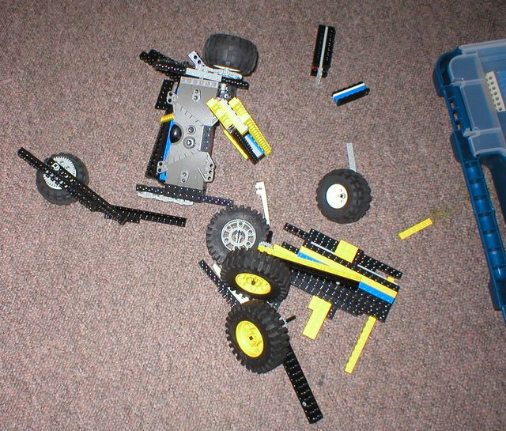

First |
Previous Picture |
Next Picture |
Last | Thumbnails
The robot club practiced the brutal ritual of drop testing - a final scoring part of events, also taking apart robots so the Lego cna be prepared for another. The rules were that a robot was to be dropped from no more than knee height, with a score being a multiple off the number of drops before critical damage (that would stop it functioning) took place. This prepared the kids to think structurally, and make choices between things that could superficially all off (like style parts), and parts that mattered (like motors, wheels and chassis structure).
The robots survived a fair bit - 3 or 4 drop tests each. Dale & Janak's bot came out on top. As predicted - Gabriel and Dannys bot lost the forks first, and the armour came off the top in a big clump on the first drop. In the rear- Dale & Janaks robot has still retained some of its drive chain. and the bumpers stayed mostly intact once they came off.
